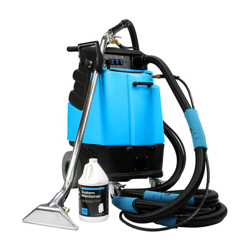

{{ town_obj.short_intro }}
JW Carpet Care provides professional carpet cleaning, rug cleaning, upholstery cleaning, stain removal, moth treatment and selected commercial cleaning in {{ page.town }} and nearby areas.
Whether you need help with a lounge, bedroom, stairs, hallway, rental property or a tired looking carpet that needs a proper refresh, this page is the local starting point for {{ page.town }}.
The aim is simple: make it easy to find the right service for {{ page.town }}, see the nearby areas we cover, and get in touch quickly for a quote.

Every card below now links to a real local service page for {{ page.town }}.
{{ s.desc | replace: town_token, page.town }}
View page → {% endfor %}JW Carpet Care also covers nearby areas around {{ page.town }}{% if town_obj.nearby %} including {% for area in town_obj.nearby limit:8 %}{{ area }}{% if forloop.last == false and forloop.length > 2 %}, {% elsif forloop.last == false %} and {% endif %}{% endfor %}{% endif %}.
Use this page as the local starting point for carpet cleaning and related services in {{ page.town }} and nearby areas.
You can move from here into the exact service page you need, then get in touch for a quick local quote.